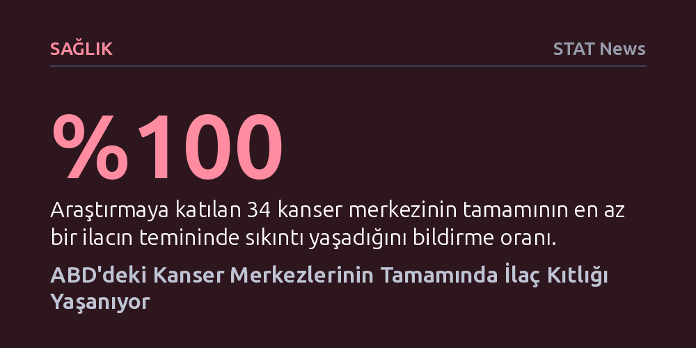

SAGLIK · STAT News · 2026-09-11
ABD'deki 34 büyük kanser merkezinin tamamında kritik ilaç kıtlığı yaşanırken, merkezlerin beşte birinden fazlasında en az beş farklı ilaca erişilemiyor. Hastaneler tedavileri sürdürebilmek için asgari dozaj ve stok sınırlaması gibi geçici çözümlere başvuruyor; klinik araştırmalar ve tedaviler ciddi biçimde aksıyor.
Dünyanın en gelişmiş sağlık altyapılarından birinde dahi hayati kanser tedavilerinin tedarik zinciri kırılganlıkları yüzünden asgari dozlara ve bürokratik sigorta engellerine mahkûm kaldığını gösteriyor.

ABD'nin önde gelen onkoloji kliniklerinde yaşanan kemoterapi ve kanser ilacı kıtlığı kritik bir eşiğe ulaştı. Ulusal Kapsamlı Kanser Ağı (NCCN) bünyesindeki kâr amacı gütmeyen 34 tedavi merkezinin katılımıyla gerçekleştirilen yeni bir araştırma, istisnasız tüm merkezlerin en az bir hayati kanser ilacında tedarik sıkıntısı çektiğini ortaya koydu.
Kriz yalnızca tek tük ilaçlarla da sınırlı değil; merkezlerin yüzde 20'sinden fazlası aynı anda beş veya daha fazla farklı kanser ilacına erişmekte zorlandığını belirtiyor. Bu tablo, en temel ve hayati tedavilerin dahi hastaneler tarafından temin edilemediği yaygın bir sistemsel darboğaza işaret ediyor.
İlaç bulamayan onkologlar hastaların tedavisini sürdürebilmek adına zorlu klinik tavizler vermek zorunda kalıyor. Araştırmaya katılan merkezlerin yüzde 61'i, hastaları tedavi etmeye devam edebildiklerini ancak bunun yalnızca ilacın tek bir damlasını dahi israf etmemek, mevcut stok kullanımını sıkı kotalarla sınırlamak ve kılavuzlarda önerilen asgari dozajları uygulamakla mümkün olduğunu bildirdi.
Yaşanan sıkıntılar sadece mevcut hasta bakımını değil, geleceğin tedavi yöntemlerini şekillendirecek bilimsel çalışmaları da doğrudan baltalıyor. Merkezlerin çoğunluğu, kritik etken maddelerin temin edilememesi sebebiyle yürütülen klinik araştırmaların kesintiye uğradığını veya durma noktasına geldiğini vurguluyor. Bu durum, yeni nesil tedavilerin geliştirilme sürecini de belirsizliğe itiyor.
İlaç yokluğu klinik düzeydeki zorlukların yanı sıra devasa bir bürokratik engeli de beraberinde getiriyor. Kanser merkezlerinin üçte ikisi, temin edilemeyen ilaçların yerine alternatif bir etken madde veya farklı bir dozaj protokolü seçmek zorunda kaldıklarında, özel sağlık sigortalarından yeniden ön onay alma sürecine girmek durumunda kalıyor. Bu mükerrer onay süreçleri, zamanla yarışan kanser hastalarının tedaviye erişiminde haftaları bulan tehlikeli gecikmelere yol açıyor.
Dünyanın en yüksek sağlık harcamasına sahip ülkesinde dahi onkoloji tedarik zincirinin bu denli kırılgan olması, temel ilaç üretimindeki yapısal aksaklıkların doğrudan bir yansıması olarak görülüyor. Sağlık merkezleri geçici idare yöntemleriyle krizi yönetmeye çalışsa da, köklü bir üretim ve tedarik güvencesi sağlanmadıkça hastaların hayat kurtarıcı tedavilere zamanında ulaşması tesadüflere bağlı kalmayı sürdürecek.